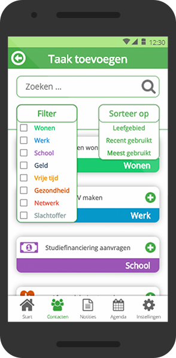
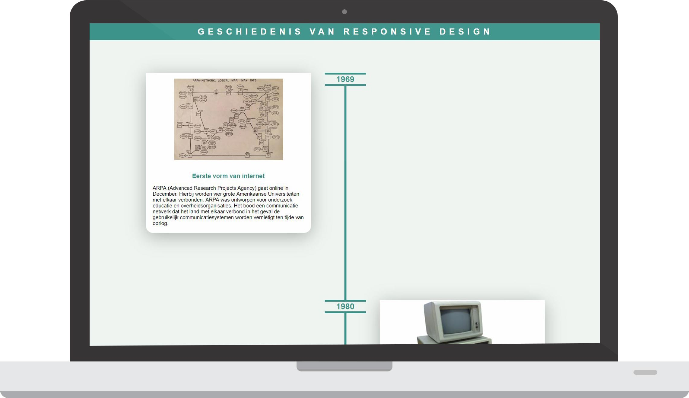
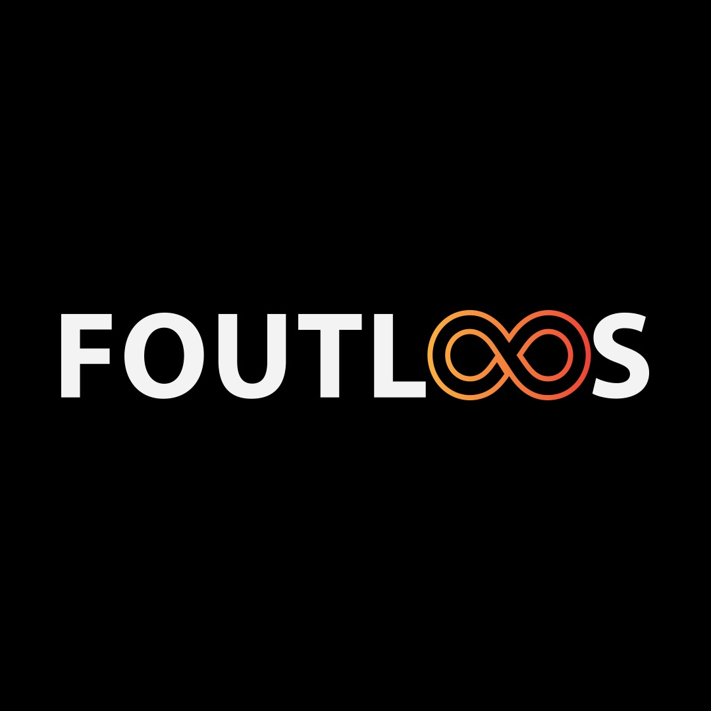

PORTFOLIO

Bureau MHR
Prototype applicatie ontwikkelt voor een kwetsbare doelgroep van Bureau MHR

Responsive tijdlijn
Een responsive website ontworpen en geprogrammeerd
Minor Usability Expert
Gebruikersbehoefte onderzoek, expert review & usability test voor Studielink, Meetroo & Bitmymoney

Minor Usability Expert
Gebruikersbehoefte onderzoek, expert review & usability test voor Studielink, Meetroo & Bitmymoney